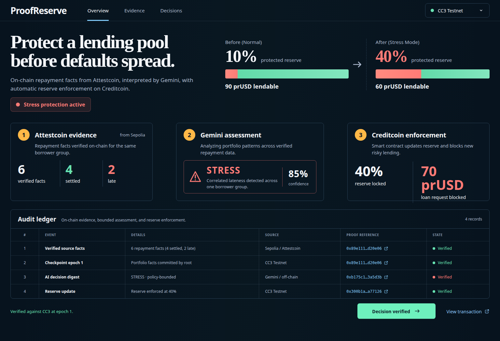

Verified cross-chain risk · enforceable liquidity protection
Attestcoin supplies proven facts. Gemini interprets the portfolio pattern. Creditcoin smart contracts retain final authority.
The product in 30 seconds
BEFORE · NORMAL
90 prUSD lendable
70 prUSD request: ALLOWED
AFTER · STRESS
60 prUSD lendable
70 prUSD request: BLOCKED
Four healthy payments plus two related late payments produced a real, policy-bounded reserve change on Creditcoin CC3.
The gap
A Creditcoin pool cannot independently read whether a borrower paid late on Sepolia.
Two late borrowers in one economic group are more dangerous than two isolated late events.
A flexible model can recognize the pattern, but deterministic contracts must control the money.
Verified facts in. Bounded reasoning. Contract-enforced consequences.
Live architecture
Four settled and two related late payments, plus a checkpoint.
REAL TXSInclusion and continuity proofs are finalized through the native CC3 verifier.
7 PROOFSEmitter, event, borrower, group, sequence, epoch, and replay state are checked.
ROOT-BOUNDStructured output selects NORMAL, WATCH, STRESS, or CRISIS.
85% STRESSPolicy checks raise the reserve and the pool rejects excess lending.
40% LOCKEDWhy Attestcoin is indispensable
A private API says a borrower was late. The pool must trust the API operator, its infrastructure, and its interpretation of the source chain.
Attestcoin proves the source receipt. ProofReserve verifies its exact business meaning before it can influence a reserve decision.
Safe AI boundary
Interpret verified aggregate features, identify correlated deterioration, select one finite regime, and provide reason codes.
Move tokens, choose arbitrary percentages, construct calls, rewrite evidence, bypass confidence, or silently lower protection.
CREDITCOIN CONTRACT CHECKS
Public proof, not a staged demo

From hackathon product to ecosystem infrastructure
Complete source-to-proof-to-AI-to-enforcement flow on Sepolia and CC3.
Factories, operator onboarding, configurable evidence sources, policies, and monitoring.
Reusable protection for lending, undercollateralized credit, RWAs, and cross-chain liquidity.
CEIP fit: engineering support and ecosystem introductions can turn a validated CC3 workflow into infrastructure that brings lenders and real financial activity to Creditcoin.